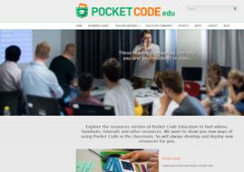
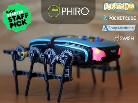
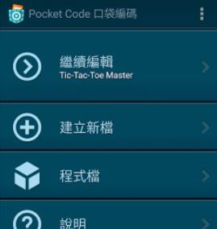

Raspberry Pi, Arduino, and NFC now supported by Pocket Code!
August 2016
Pocket Code is ready for your tinkering projects as well as ultra-fast prototyping of mobile IOT (Internet Of Things) apps connected to real hardware.
MORE
Coding skills for refugees, learned directly on their smartphones!
July 2016
Pocket Code is ideally suited for young refugees to learn how to develop Apps in their own languages.
MORE
Samsung and Catrobat #CodingForKids roadshow in yellow school bus
May 2016
@SamsungAT has joined forces with Catrobat to teach computational thinking skills to kids using Pocket Code using only smartphones!
MORE
Massive Open Online Course on Pocket Code
April 2016
With Google's CS4HS award, we created a MOOC for educators that includes 18 videos, many activities and excercises, and that has its own web community!
MORE
Alice Game Jam Review
March 2016
Congratulations to the winners of the Alice Game Jam!
Find a review, the winners and further information about this Game Jam on our G+ community page!
MORE
Google Summer of Code 2016
29 February 2016
Google selected us for the fifth time as a Google Summer of Code mentoring organization!
MORE

Educators' platform launched!
30 January 2016
Find, contribute, and share curricular material and tutorials about how Pocket Code can be used in schools!
MORE
Be part of the #AliceGameJam with Pocket Code and Scratch!
7 December 2015
Participate in the Alice Game Jame with Pocket Code and Scratch during the Computer Science Education week from December 7th to 13th! Create and design your own Alice themed game or story and share it with us!
All information needed and some cool tutorial and media-stuff can be found on the special event website!
Let's code and be part of something big!
MORE

Google supports Pocket Code to teach children how to code
19 November 2015
Fundings by Google help us to reach out for children all over the world and give them the chance to learn how to code with Pocket Code! Schools and teenagers worldwide are already using Pocket Code and create their own apps and games, to get prepared for the digital future. Thanks to Google we even can reach out for more children and provide them additional materials and tutorials!
Read the full story of Google Fundings supporting Pocket Code here
MORE
Pocket Code featured at the Lovie Letters
2 November 2015
Find Pocket Code on the Lovie Letters presented by Google!
Interesting facts about the project, its history and the people behind it!
MORE

Pocket Code supports Phiro robot, a staff pick on kickstarter.com!
2 November 2015
The Phiro Pro robot can be controlled entirely through Pocket Code!
UPDATE: Funding goal achieved after only five days, with 32 left to go!
MORE
Pocket Code and the No One Left Behind project won the ICT 2015 'Young Minds' Award - Grand Prix Best Connect Exhibitor Award!
26 October 2015
Together with the Human Brain project, we won the prize for the best exhibitor at the Horizon2020 conference of the European Commission!
MORE
Pocket Code won a Lovie Award and a People's Lovie Award!
13 October 2015
Pocket Code has been named a Silver Winner of the Lovie Awards and a winner of the People's Lovie Awards.
Thank you for your votes and support!!
MORE
Be part of the Alice Game Jam during #CodeWeekEU !!
10 October 2015
Create your own Alice themed Game, App or Story ‎with Pocket Code!
MORE
Pocket Code now has a media library!
21 September 2015
Please consider creating and contributing images and sounds!
MORE

We are looking for translators!
5 September 2015
Please help us to reach out to even more kids by translating our apps to your language!
MORE
Pocket Code featured in Google's official "Tech Tips from Teachers" YouTube channel!
4 August 2015
The kids featured in the video are from our partner school in Graz, Austria, near our headquarters!
MORE
Pocket Code fully supports Lego Mindstorms NXT robot programming!
15 July 2015
You only need your Android smartphone to give your robot a face, a voice, and computer vision!
MORE

Pocket Code now allows to create real Android apps!
12 June 2015
You can download your Catrobat program after uploading it first to the sharing site!
MORE
Tatiyana Domanova is awarded Google Anita Borg Memorial Scholarship!
22 May 2015
Catrobat team member and former Google Summer of Code student receives prestigious scholarship from Google!
MORE
No One Left Behind research project funded by European Union!
19 May 2015
Centers on Pocket Code for game based learning, focuses on inclusion!
MORE
Catrobat is awarded highly competitive CS4HS grant by Google!
29 April 2015
Will be used to create a massive open online course (MOOC) on Pocket Code!
UPDATE (8 November 2015): First parts are available on
https://edu.catrob.at/
Catrobat article on Google's Open Source blog!
13 February 2015
Our Google Summer of Code 2014 wrap-up is featured on Google's Open Source blog!
MORE
Pocket Code at the Global Games Jam 2015!
23-25 January 2015
Catrobat took part at GGJ'2015 held at GameCity in Nottingham!
MORE
Beyond One Hour of Code!
9 December 2014
Pocket Code is featured on code.org/learn/beyond under "Tutorial apps for phones and tablets"!
MORE

Programmieren am Handy nach dem Legoprinzip!
26 November 2014
Newspaper article on Catrobat (in German language)!
MORE

Create an Android game in less than one hour!
11 October 2014
Pocket Code is featured during the European Code Week!
MORE
Take a crash course in fun!
4 September 2014
Pocket Code featured by Google in back-to-school promotion!
MORE
Invited talk about Pocket Code
22 August 2014
Forthcoming features presented at the Constructionism conference
MORE

Scratch team visits Catrobat HQ to start collaboration
18 August 2014
Mitch Resnick gave a talk on Sowing the seeds for a more creative society
MORE

First Android App creation contest with Pocket Code
7 July 2014
The winning app will be converted into an Android app on Google Play!
MORE

Worldwide the first app on Google Play created entirely on a smartphone
8 May 2014
Tic-Tac-Toe Master was downloaded 23,000 times from Google Play so far!
MORE

Pocket Code and Pocket Paint on Google Play for Education
9 March 2014
Video of our apps used in schools for STEM education!
MORE

New versions of our Apps on Google Play
8 March 2014
Pocket Code and Pocket Paint are out of the beta and freely available on Google Play!
MORE

Google Summer of Code 2014
24 February 2014
Google selected us for the fourth time as a Google Summer of Code mentoring organization!
MORE
Catrobat at the Computer Science Education Week
9 December 2013
Pocket Code is participating at the Computer Science Education Week!
MORE

Catrobat is participating at the European Code Week
29 November 2013
Pocket Code is demonstrated at the European Code Week and Robotics Day!
MORE
Google is promoting Pocket Code
14 November 2013
Google is promoting Pocket Code heavily during the launch of Google Play for Education!
MORE

Live AR.Drone programming at Scratch'2013
25 July 2013
Pocket Code presentation at Scratch'2013, including a live demo of programming a Parrot AR.Drone!
MORE

Our Apps on the OLPC Tablet
17 July 2013
The preliminary physics version of Pocket Code is the programming app on the new OLPC Tablet!
MORE

National Innovation Award
7 March 2013
We were awarded the Austrian National Innovation Award 2013 in the category Multimedia by the Austrian Minister for Economics and Youth Development!
MORE